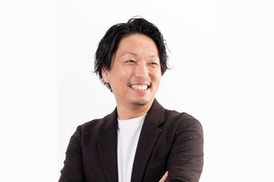
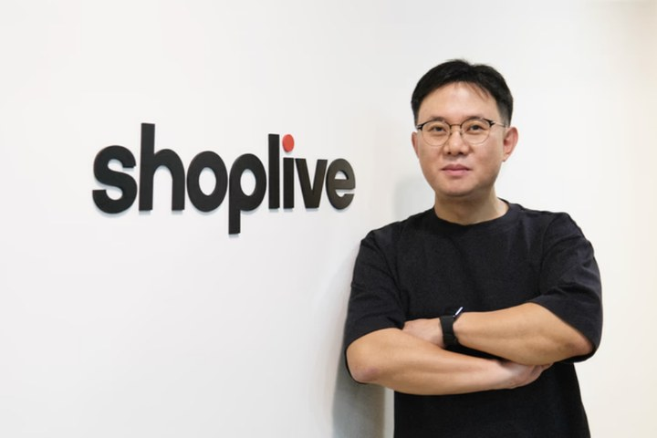
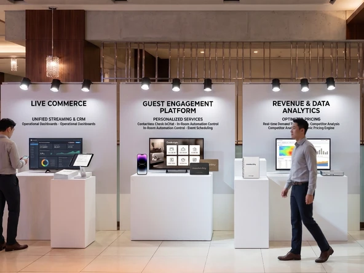
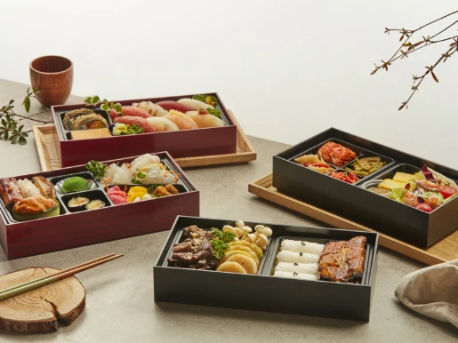
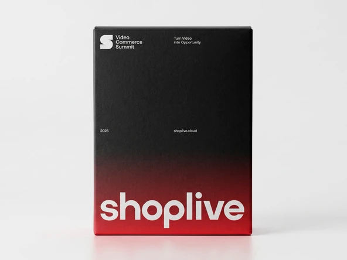
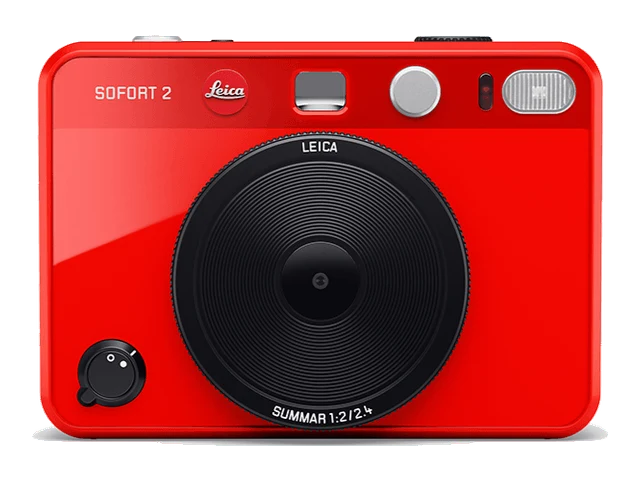

패션
무신사 라이브, 콘텐츠와 커머스의 경계를 넘어
김모을 MUSINSA 본부장
성과를 만들고 있는 플랫폼과 브랜드의 실행법
카테고리별 라이브·숏폼 성공 전략
한국에서 일본까지, 확장과 성장의 기회
Introduction
라이브커머스는 각 산업에서 어떻게 진화하고 있을까요?
Video Commerce Summit 2026은 국내 Video Commerce 시장을 선도해온 리더들과 일본의 주요 뷰티·커머스 기업이 한자리에 모이는 자리입니다.
각자의 시장에서 실제 성과로 증명해온 성공 사례와 인사이트를 공유하고, 이를 바탕으로 한국의 라이브커머스 역량이 아시아 시장으로 확장되는 새로운 교두보를 함께 만들어가고자 합니다.
단순히 성공 사례를 ‘듣는’ 자리가 아닙니다.
2026년 하반기와 2027년, 무엇을 실행하고 어떻게 성장할 것인지를 함께 고민하고, 새로운 비즈니스 기회와 전략을 구체화하는 자리입니다.
Speaker
라이브커머스 시장이 어디를 향해 나아가고 있는지, Shoplive Video Commerce Summit 에서 가장 먼저 확인하실 수 있습니다.
김모을 MUSINSA 본부장

오니시 기요타카 @cosme Connect Experience본부 본부장

김기영 샵라이브 CEO(대표)
이규원 샵라이브 최고기술책임자(CTO)
김성진 샵라이브 비즈니스총괄책임자(CBO)
Why Attend
카테고리를 이끄는 브랜드들이 어디서 기회를 찾았고, 그 기회를 어떻게 매출로 연결했는지 직접 확인하세요. 실전 사례를 통해 라이브커머스가 브랜드를 다음 단계로 이끄는 방법을 배울 수 있습니다.
라이브커머스를 이제 막 시작하셨든 이미 운영 중이든, 지금 단계에 필요한 실전 전략과 카테고리별 방법론을 만나보실 수 있습니다.
국내 카테고리 리더는 물론 일본 뷰티·커머스 기업과 한자리에서 교류하며, 한국의 라이브커머스 역량을 글로벌로 넓힐 접점을 만나보세요.
라이브커머스가 우리 브랜드에 맞을지 확신이 없으신가요? 실제 매출로 이어진 사례와 도입부터 정착까지의 방법론으로, 지금 결정에 필요한 답을 이 자리에서 얻어가실 수 있습니다.
Session
각 세션을 눌러 내용을 펼쳐보실 수 있습니다. 오전과 오후 모두 시간까지 확정된 상태입니다.
라이브는 커머스에만 머물지 않고 다양한 카테고리의 새로운 산업과 만나 시너지를 내고 있습니다. 라이브가 줄 수 있는 신뢰의 자산을 이제 새로운 가능성으로 확장합니다.
지난 1년, 라이브는 어떻게 성장을 만들어냈을까요? 성과를 숫자로 돌아보고, 어디에서 어떤 방식으로 성장이 만들어졌는지 그 과정을 짚어봅니다.
팬덤이 매출로 이어지는 지점은 어디인가. 인플루언서가 직접 진행하는 라이브를 어떻게 기획하고 운영하는지, 실제 성과로 이어진 방식과 함께 공유합니다.
리빙은 구경하는 재미가 큰 만큼 구매까지 가는 길이 긴 카테고리입니다. 오늘의집 라이브가 그 거리를 어떻게 좁혀왔는지, 보는 사람이 사는 사람으로 바뀌는 지점을 짚습니다.
Shoplive가 선보일 AI 기술을 선공개합니다. AI가 라이브 운영을 어디까지 개선할 수 있는지, 그 변화가 브랜드와 고객 경험에서 어떤 가치로 이어지는지 함께 살펴봅니다.
일본 최대 뷰티 플랫폼이 라이브커머스를 어떻게 바라보고 있는지, 현지 기업의 시각으로 직접 전합니다. 한국어 통역이 함께 제공됩니다.
국경을 넘으면 무엇이 달라지는가. K뷰티를 세계에 파는 회사가 현지에서 통한 방식을 공유합니다.
아이에게 쓰는 물건일수록 선택이 신중해집니다. 그 신뢰를 라이브로 어떻게 쌓았는지 공유합니다.
6년간 라이브커머스를 통해 성장해온 무신사가 그 과정에서 발견한 콘텐츠와 커머스의 새로운 가능성, 변화하는 고객 경험, 그리고 앞으로 만들어갈 성장의 방향을 이야기합니다.
Benefit
Shoplive의 최신 AI기능을 직접 체험해보실 수 있는 부스가 점심시간과 쉬는 시간 내내 열려 있습니다.

같은 고민을 하는 브랜드 담당자들과 점심과 네트워킹 시간에 편하게 이야기 나누실 수 있습니다.

참석해주신 모든 분께 이번 서밋을 기억할 수 있는 기념품을 준비했습니다.

끝까지 세션을 들으신 분들을 위해 특별한 선물을 준비했어요.
참여 조건Shoplive 링크드인 팔로우

지금 가장 앞서가는 브랜드들의 이야기를 한자리에서 듣고,
그 기회를 우리의 비즈니스로 만들고 돌아가는 자리입니다.
Attendance
Video Commerce Summit 2026은 이커머스·유통·브랜드 기업의 리더분들을 별도 초청으로 모시는 행사입니다. 참석 여부는 초청장에 안내된 담당자에게 회신해 주시면 됩니다.
참석이 어려우시거나 동반 참석을 원하시는 경우, 회신 시 함께 알려주시면 자리를 조정해 드립니다.
Venue
서울 송파구 올림픽로 300 롯데월드타워 31층SKY31 CONFERENCE A룸
10:30 – 11:00등록 후 바로 프로그램이 시작됩니다
1. 대중교통 이용
2호선 잠실역 1번 출구 → 지상 이동 → 타워 1F EAST GATE 진입 → 1F 엔젤리너스 옆 등록데스크 확인
2. 주차장 이용
주차장 진입 → 주차장 B2F ~ B4F 이용 → 지하 SOUTH GATE E/V 탑승(F7, F8호기) → 타워 1F EAST GATE 방향 이동 → 1F 엔젤리너스 옆 등록데스크 확인
잠실역 하차 → 잠실광역환승센터 MALL 입구 → 서울 스카이 전망대 옆 세븐일레븐 E/S 탑승 → 1F 이동 → 1F 엔젤리너스 옆 등록데스크 확인
* 별도로 주차권이 지원되지 않고, 행사장 부근이 혼잡할 수 있어 대중교통 이용을 권장드립니다.
FAQ
별도의 온라인 신청 폼은 운영하지 않습니다. 초청장을 받으신 분에 한해 참석하실 수 있으며, 참석 여부는 초청장에 안내된 담당자에게 회신해 주시면 됩니다.
참가비는 따로 없습니다. 초청드린 분들을 정성껏 모시고 싶어 준비한 자리라, 편안하게 참석해 주시면 됩니다.
초청 메일에 회신해 알려주시면 감사하겠습니다.
이번 서밋은 현장 참석만 가능한 오프라인 전용 행사입니다.
네, 가능합니다. 초청 메일에 회신해 변경하실 분의 성함과 직함을 알려주세요.
이번 서밋은 초청 기업을 대상으로 진행됩니다. 참석을 희망하신다면 초청 안내의 문의처로 남겨주시면 안내해 드리겠습니다.
이메일 초청장을 지참해 주시면 원활하게 등록하실 수 있습니다.
앳코스메 등 일본 연사 세션은 일본어로 진행되며, 한국어·영어·일본어 동시통역(AI 기반)이 지원될 예정입니다.
10시 30분부터 등록이 시작되며, 11시에 오프닝이 시작됩니다. 등록 후 바로 착석하시면 됩니다.
주차는 지원되지 않습니다. 행사장 부근이 혼잡할 수 있어 가급적 대중교통을 이용해 주시길 바랍니다.
개인 기록 용도의 촬영은 가능하나, 세션 발표 내용의 영상 녹화는 제한됩니다.
점심 시간에 맞춰 도시락을 제공해 드릴 예정입니다.
선착순으로 자유롭게 착석하실 수 있습니다. 다만 원활한 운영을 위해 현장 스태프가 좌석 안내를 드릴 수 있습니다.
마지막 순서(15:00–15:20)에 현장에서 진행합니다. 응모하시려면 Shoplive 링크드인 팔로우가 필요하며, 당첨자는 현장에서 바로 안내해 드립니다. 자리를 비우신 경우 재추첨될 수 있습니다.